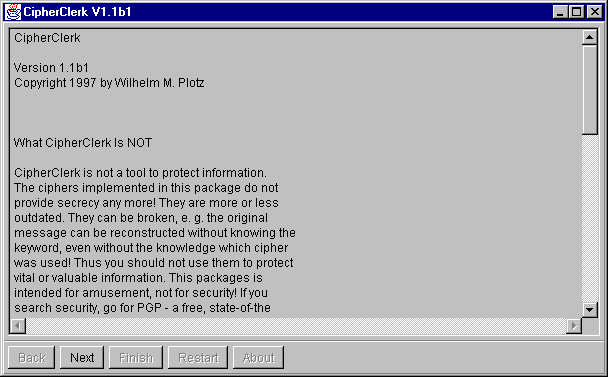
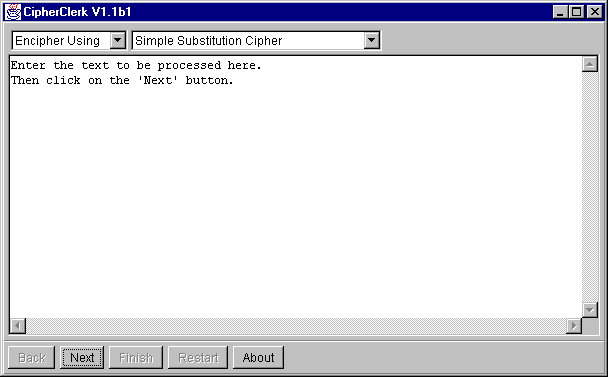
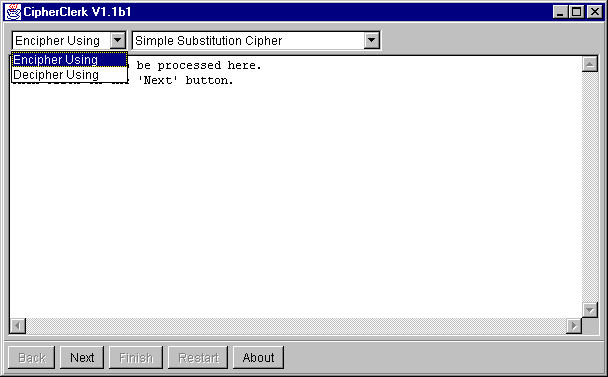
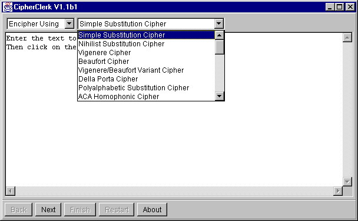
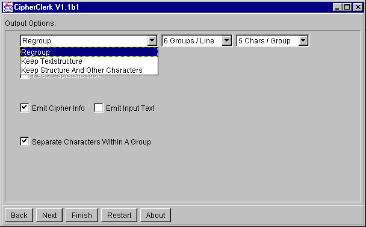
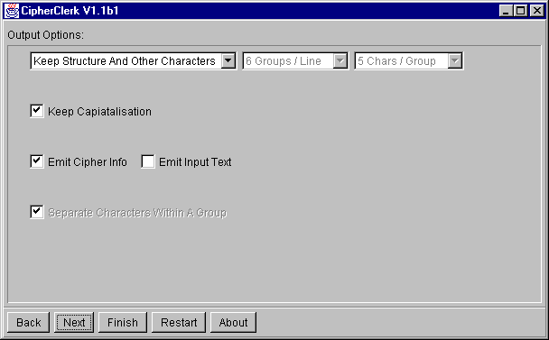
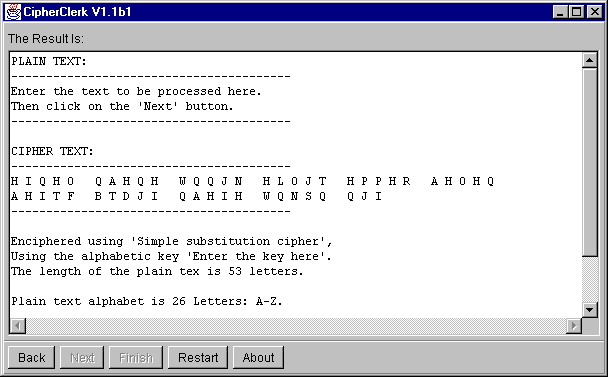

Using CipherClerk's Applet
This document contains images of the applet/application. Clicking on the
buttons does therefore have no effect. Note that on your system the applet/application
may look different, while the functionality should be the same.
Step 1: Entering the text
When the applet (or the application) starts, it presents the following
dialog:

You should read the text and press the Next button. You will
find a dialog like the one given below:

Please replace the given text by the text you would like to process.
Whether operations like copy and paste are available or not depends on
your system. When you've entered the text, press the Next button
to continue.
Step 2: Choose what to do
Now you should choose either to encipher or decipher the text entered before.

Step 3: Choose a cipher
Simply choose one cipher from the list. Simply? Well, there may be some
pitfalls. In the depicted case there is one more cipher at the and of the
list. Moving the pointing device doesn't help. To select the hidden cipher
I have to select the last visible one and press the arrow-down. Then the
list scrolls upwards hiding the first cipher...

After selecting a cipher setup it's parameters. To do so, press the
Next
button. The result depends on the cipher you've chosen. For example,
it might look like:

Most ciphers require a key word which may be a phrase or any other text,
too. Not all ciphers will accept all keys. If the key is not acceptable,
the buttons Next and Finish will be dimmed. You may use
the Clear button to erase the key word field.
Not all ciphers may use all letters. Normally the use of non-standard
alphabets arises from the way a cipher works. CipherClerk's Applet allows
you to choose any alphabet the cipher can use to operate and doesn't offer
illegal choices. At present, the following alphabets are available:
-
26 letters: A-Z
-
27 letters: A-Z &
-
25 letters: A-Z, J replaced by I
-
25 letters: A-Z, U replaced by V
-
25 letters: A-Z, W replaced by V V
-
36 letters: A1-J0 -Z
-
36 letters: A-Z 0-9
Remember that CipherClerk's Applet implements classical ciphers. The ciphers
have been invented long before ACSII became popular. The two 36 letter
alphabets differ in the way mixed versions
of them are generated: For the first one, the letters A-Z are mixed and
then the numbers 1..9,0 are inserted after the letters A..I,J. For the
second, the numbers 0...9 are appended after the letters A...Z and the
resulting string is mixed.
Various ciphers will offer additional parameters. These parameters will
be described along with the ciphers. Note that the setup of parameters
always refers to the enciphering process - even if you actually want to
decipher, setup the cipher exactly in the same way as if you'd like to
encipher!
When finished, press the Next button to continue. You may press
the Finish button too. This would skip the next step where you
may set up the output.
AN IMPORTANT NOTE
Obviously, the processes of enciphering and deciphering may be different.
Nevertheless you do not need to worry about this - even if some specific
setup of a cipher might suggest to do so. CipherClerk's Applet will handle
all this stuff. However you should be aware the all the options are considered
from the point of view of the enciphering process.
Step 4: Choose the output format
Usually cipher text is rearranged into groups of five letters. By default,
CipherClerk's Applet does this and placed eight such groups in a line.
You may change the number of groups in each line as well as the number
of letters in a group.

If you regroup the result, you may have CipherClerk's Applet placing
a single blank separating the characters by checking Separate Characters
Within A Group. Besides regrouping, you may configure CipherClerk's
Applet to conserve the text structure:

If you want to conserve the structure of the text while removing punctuation,
select Keep Textstructure or select Keep Structure And Other
Characters if you want to keep punctuation. By default, all letters
are capitalized. By selecting Keep Capitalization you may conserve
the capitalization of the text.
You may want to check Emit Cipher Info and /or Emit Input
Text so that CipherClerk's Applet will append a description how the
text was processed and/or the input text. Finally,
As you might already have guessed, press the Next or Finish
button to continue.
Step 5: Have fun with the result
The Finish button, whenever enabled, will directly move to the
result. Now you may select and copy the result into another document.

The Restart button brings you back to the begin so that you
can modify the text to process or process another text.
How CipherClerk's Applet processes a text
CipherClerk's Applet processes a text in the following manner:
-
A copy of the text to process is made. This copy contains only those characters
of the plain text that are present in the chosen alphabet. If the alphabet
requires to replace some letters by others, this is done too. If a ciphers
requires that all words are separated by a single space, this is handled
by CipherClerk as well.
-
A copy of the key word prepared in the same way.
-
The copy of the text is processed by the selected cipher using the copy
of the key word.
-
Depending on the chosen output options, the resulting text is either reformatted
into groups or the text structure is reconstructed: CipherClerk iterates
over the original input text. If a space or line separator is found, it
is emitted. If a letter of the chosen alphabet is found, the next letter
of the result text is emitted. If capitalization is to be conserved, the
emitted letter is capital if the plain text letter is capital to. All other
characters are emitted only if Keep Structure And Other Characters
was
chosen.
Please note that the alphabet for plain text and cipher text may be different.
Provided that you've setup the parameters for the selected cipher correctly,
CipherClerk's Applet will handle this for you.
To proceed, you may